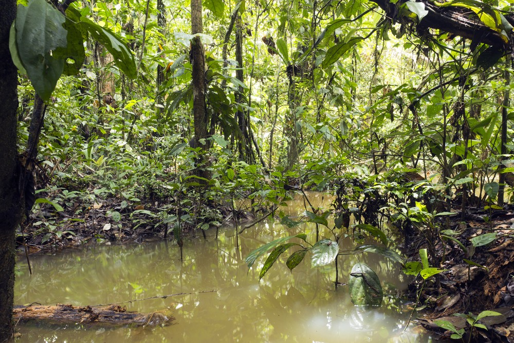
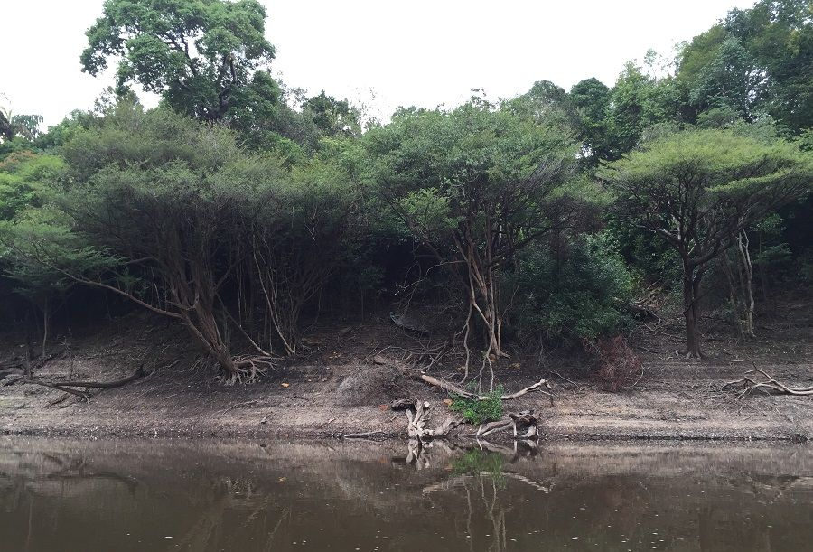
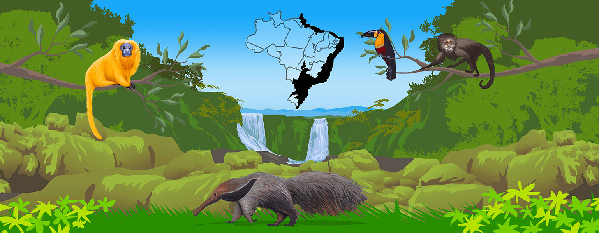
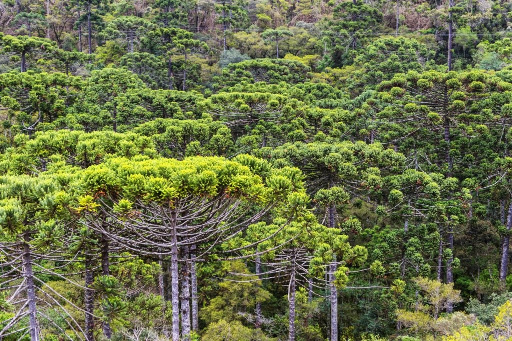
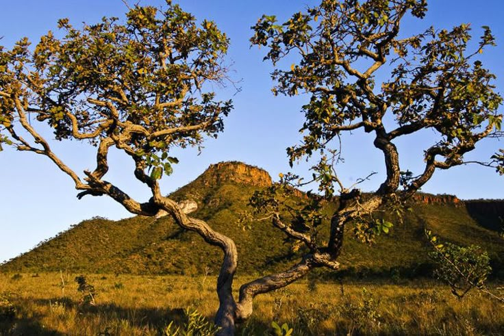
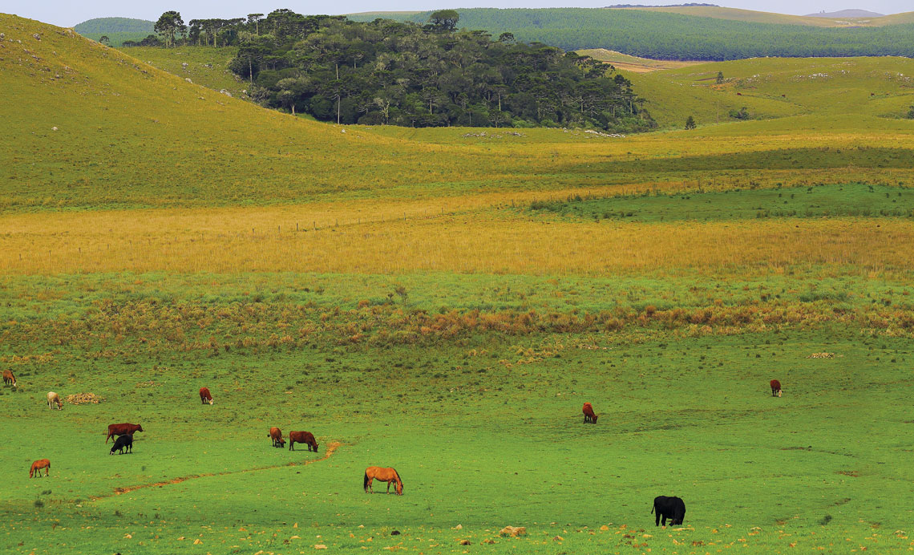
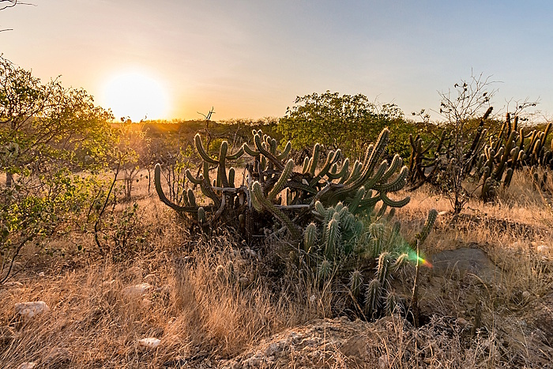
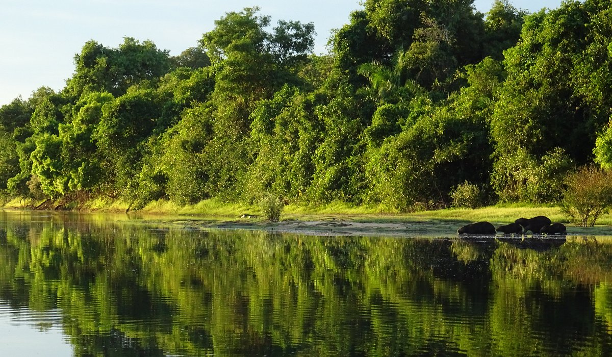

Biomas Brasileiros
Bem-vindo ao Estudo de Biomas
Selecione um tópico abaixo para começar seus estudos.
Biomas Brasileiros
Biomas são grandes regiões ecológicas compostas por um conjunto de ecossistemas com clima, vegetação
e fauna similares, com características geograficas e geológicas em comum.
Quais são os Biomas mais importantes no Brasil?
- Floresta Amazônica
- Mata Atlântica
- Floresta de Araucária
- Campos Cerrados
- Pampas
- Caatinga
- Pantanal
Biomas ≠ Ecossistemas
O Bioma é uma grande unidade geográfica com características climáticas e de vegetação semelhantes, enquanto o Ecossistema é mais específico e foca na interação entre todos os fatores vivos e não vivos em uma determinada localidade que pode ser de grande ou pequena escala.
Biomas Brasileiros
-
Floresta Amazônica:
- É uma floresta tipicamente pluvial tropical, onde pode ser reconhecida a mata dos Igapós, a mata das Várzeas e a mata de Terra Firme.
- A mata dos Igapós, é situada próximas aos rios, encontra-se permanentemente alagada, abrigando plantas como a Vitória-Régia, Aguapés, Palmeiras, etc.
- A mata das Várzeas, situada entre os igapós e a terra firme, é inundada apenas durante as épocas de cheias dos rios e abriga plantas como a Seringueira, o Cacaueiro e Palmeiras.
- A mata de terra firme, situada nos terrenos altos e nunca inundada, abriga vegetais como a Castanheira, o Guaraná e o Pau-Rosa.
- As precipitações de chuvas são bem distribuídas no decorrer do ano, e as temperaturas médias anuais ficam em torno de 25 a 28 °C.
- A Floresta Amazônica tem grandes árvores, de folhas largas, com uma vegetação higrófita (plantas adaptadas a viver em locais onde há muita umidade).
- Floresta Amazônica não tem um solo rico em nutrientes minerais, a maior parte do solo é pobre nesse tipo de nutriente, devido a rápita decomposição e o reaproveitamento da matéria orgânica que cai no solo.
- Sua fauna também é bastante diversificada. -
Mata Atlântica:
- Se localiza ao longo da costa litôranea, acompanhada de uma cadeia de montanhas.
- Tenha sido muito devastada com a ocupação e a introdução de áreas para agricultura.
-- Mata Atlântica ≠ Floresta Amazônica:
Elas se diferem pela topografia do terreno que ocupam, A Floresta Amazônica situa-se em ampla planície, já a Mata Atlântica é mais íngreme, ocorrendo em regiôes montanhosas. --
- A cadeia de montanhas que acompanha a Mata Atlântica atua como uma barreira aos ventos úmidos que sopram do mar, que ao atingirem as montanhas, sobem e sofrem resfriamento, havendo condensação de vapor-d'água, que se precipita em forma de chuva.
- A vegetação é constituída predominantimente, por higrófitas, também possuindo árvores de grande porte ligadas por cípos.
- A fauna é semelhante à Amazônica.
-
Floresta de Araucária:
- O clima da região é Temperado, com chuvas regulares e estações relativamente bem definidas, em que o inverno é normalmente frio, e o verão razoavelmente quente.
- As copas das árvores formam uma camada contínua, como ocorre na Floresta Amazônica e na Mata Atlântica, por serem mais abertas, são menos úmidas.
- Atualmente, a Mata de Araucárias é um ecossistema praticamente extinto por conta da exploração do pinheiro-do-Paraná. -
Campos Cerrados
- O clima da região é quente, com duas estações, uma seca no qual os rios não secam, porém tem sua vazão reduzida, e a outra chuvosa.
- o Cerrado é um tipo de Savana, sua vegetação é rasteira, apresentando características xeromóficas, tais como caules tortuosos com casca grossa e folhas espessas com superfície muitas vezes brilhantes e também existem plantas típicas de lugares úmidos.
- As queimadas ocorrem naturalmente com certa frequência, entretanto, muitas plantas típicas desse bioma possuem uma resistência maior à ação do fogo, a espessa camada externa nos caules, funciona como um isolante térmico.
- Entre os mamíferos da região, são consumidores de primeira ordem, destacando-se, veadores e grande variedade de roedores, e consumidores de segunda ordem são a onça-pintada, o lobo-guará.
-
Pampas
- Grande importãncia econômica para a agricultura e a pecuária da região.
- São formações de campos limpos, com uma distribuição regular de chuvas, apresentando verão quente e inverno muito frio.
- A vegetação é formada predominantemente por gramíneas.
- A fauna apresenta alguns roedores, raposa-do-campo, gato-do-pampa, etc.
-
Caatinga
- Apresenta um clima semiárido, com chuvas escassas e irregulares e temperatura média elevada, o verão é seco e os rios secam.
- A vegetação é formada por xerófitas (plantas adaptadas ao clima seco), as plantas se caracterizam por terem folhas apemnas nos três ou quatro meses de inverno, a queda das folhas na estação seca representa uma maneira de reduzir a área exposta à transpiração.

-
Pantanal
- Localizado em uma região plana onde os rios da bacia do Rio Paraguai extravasam suas águas nos meses de cheia, inundando extensas áreas, mesmo nos meses mais secos, muitas regiões ainda permanecem alagados.
- A vegetação é variada, com aspectos de Cerrado, Pampa e Mata das Araucárias, nas regiões baixas alagadas encontramos plantas aquáticas, nas regiões mais secas a vegetação apresenta características do Cerrado e existem florestas com predomínio de figueiras.
- Abriga uma fauna aquática bem variada, existem também grandes répteis e existem também mamíferos, destaque são as capivaras